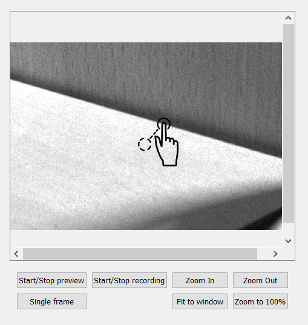
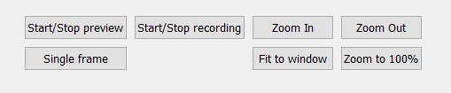
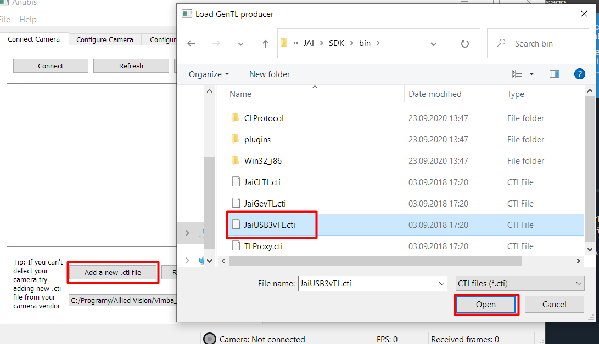
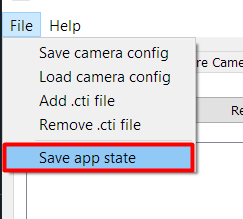
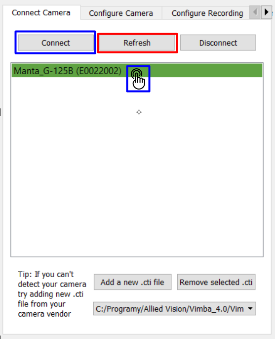
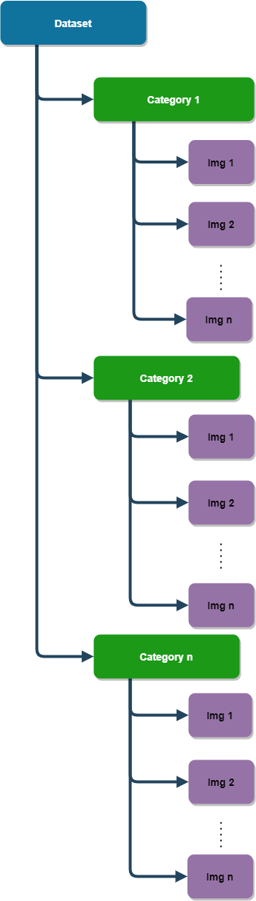

In the top right part of the application window area for live preview is located. Once you start receiving frames from camera, they will appear there. If you have image zoomed in you can click and drag to move freely around the picture or you can use the scroll bars.
To control camera, you need to use buttons located under the preview window. Purpose of individual buttons will be explained shortly.
The Start/Stop preview will start getting new images from the camera in a continuous way. If you get only one frame or none at all, check if you have continuous acquisition mode set in the camera configuration
Using Single frame, the camera will send one frame and it will be displayed in the preview area.
The Start/Stop recording will do the same thing as starting preview, however in addition the frames will be saved to your hard drive. Save location and duration is set up in Configure recoding tab, however you can always stop recording prematurely.
Zoom buttons only affects the preview window and not the frames saved. Zoom in and Zoom out buttons are self-explanatory, Fit to window will make sure that the image will always fill all the available area without changing the aspect ratio of the image. Zoom to 100% will show the image in 1:1 pixel ratio (real size).
Before you can search for your camera, you need to add GenTL transport layer file (.cti). These files are usually a part of camera vendor SDK or camera software. It is recommended to use transport layer file directly from the camera vendor, however different files may sometimes work as well. Note that you can add as many transport layer files as you want but in that case some devices may be found multiple times.
If you do not want to search for .cti files manually every time you start the application, you can save active configuration in the file menu as shown in the picture below.
Now that you have transport layer ready, you can proceed to searching for cameras. Simply click the refresh button and wait for application to search for devices (red).
In the list you can select the camera and click connect or alternatively you can double click the listing you want to connect to (blue). After the camera is connected, the listing should turn green, and the camera should be listed in the status bar in the bottom of the application window.
To disconnect the camera simply click disconnect button in the connect camera tab. Note that if you refresh cameras and connect to a new one, the current camera will be disconnected automatically.
In this tab you can do all the configuration of the camera you need. In the top portion of the tab, there is a configuration level selector with three levels (beginner, expert and guru) based on the selection, some features may or may not be available to you. You can modify the parameters as you like, but numerical features have some limits in most cases and you won’t be allowed to put higher or lower numbers in. If you want to change the parameter simply input number or text and hit enter. For enumeration, command and Boolean features you just need to change the value and the feature will be changed without hitting enter.
To save the configuration or load it back to the camera, you can use buttons in the lower part of the tab. Note that the configuration files are device dependent and cannot be transferred between different camera models, sometimes not even between different devices of the same model.
If you want to properly save frames to the hard drive, you will need to set up this tab. First you need to specify a file name without extension as the application only saves .png images (yellow field). You can input any string into the file name field but cannot input characters that are not supported for file names in the Windows ( ^\ /:*?"< >|). As you can see in the tip, you can add %n to number saved frames and %d to add a time stamp. If you do not add %n, the application will automatically save the images with (%n) to make sure they will not overwrite themselves.
In the next text field you need to specify saving location either by hand or you can use a file dialog opened by the Save Location button (blue field). If you leave this field empty, the frames will be saved into the application directory. If the selected folder does not exist, the frames will not be saved
Sequence duration let’s you set time in seconds you want the recording to last (green field). If you want to control the recording manually, you can set it to 0. Note that you can always stop the recording manually even before the set up time passes.
All these settings can be saved to application inner configuration file using Save settings or resetted using Default settings. If you save the settings the application will load them automatically at the start of the program (red field).
This tab’s purpose is to allow you to train your tensorflow model created using Keras API and to test its response on the live camera feed. In order to use this tab you first need to load the model folder using Load Model button and then navigating using a file dialog. When you finish training, you can also save the model as a new directory using Save model button (yellow field).
As you can see in the picture above, this tab has two separate options one for training the network and the other for live classification (green field).
This tab’s behavior is autonomous and whenever you have both camera connected and model loaded you will be able to see results of the prediction in the graph as in picture below. As of now, you need to know which category belongs to which output as Keras does not save category names along with the model nor does the Tensorflow. As some model can have hundreds of categories, which would be very hard to read, the application shows only up to 5 categories with the highest activation for given image. If you have model set up to output one-hot encoded activation, the graph will show only the category with strongest activation and one of the other categories which all have activation 0 or another constant.
To be able to train the model you need a dataset. This dataset must have folder structure as shown on the figure below. Bear in mind that the categories (represented by subdirectories) will be treated in alphabetical order. It is recommended to name them 0-n where n is number of categories in the model. If for example you have a model with 4 categories, you should create directories named 0,1,2 and 3. Even if you don’t have any data for some of the categories.
After your dataset is ready you can select it using file dialog or paste a path directly (blue field).
After clicking load Data, the dataset will be loaded to the memory and resized to fit your model’s needs (red field).
When the data is loaded, you can set up validation split and number of training epochs and then start the training (magenta field). You will see that beside simple progress bar you can track the network’s performance during training (cyan field). If you are not satisfied with the results after the training completes, you can run it again on the same dataset or load a new one. It is recommended to save the network after each training so you will not lose the progress in case your network will be overfit.
Save camera config and Load camera config should only be used when the camera is connected and their behavior is the same as described here. The same goes for add.cti file and remove .cti file. If you want to save application config including transport layer file paths, you need to click Save app state.
Open help will take you to this web help. About Anubis contains informations about application itself and Git Repository will take you to a Github page of this program, where you can find the newest versions as well as submit bugs or feature requests.
In the bottom part of the application is a status bar. The left side shows last action either for a few seconds or until a new status update is called.
The middle part shows active camera with three color coded states. Grey circle means that the camera is not connected, green light represents connected camera ready to receive instructions and finally red light means that the camera is busy receiving frames.
On the very right is information about frames received in this session as well as current frames per second